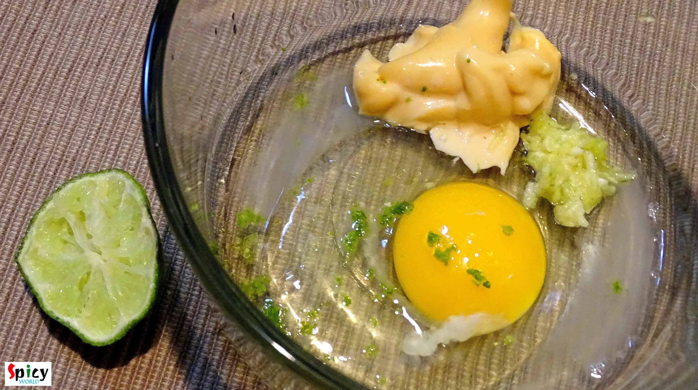
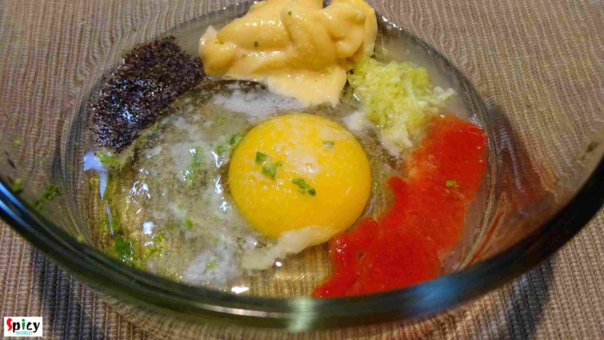
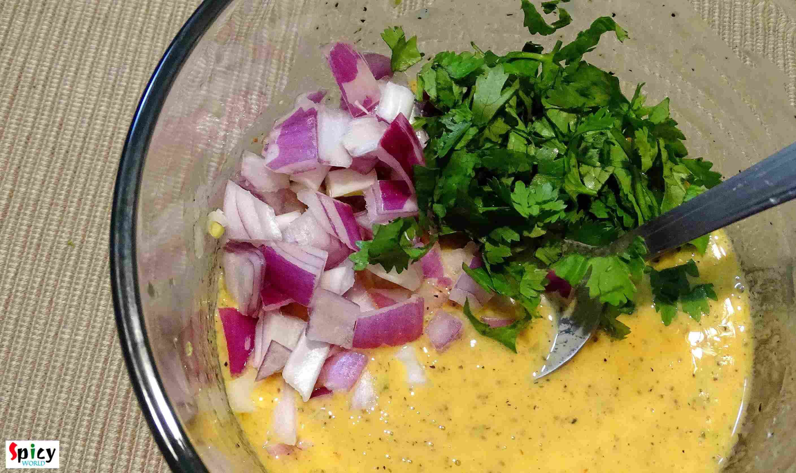
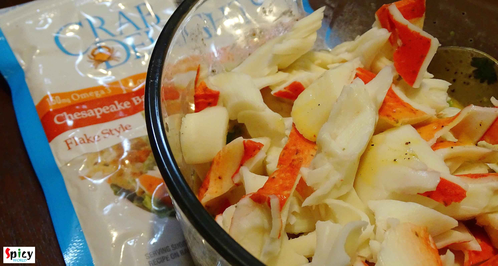
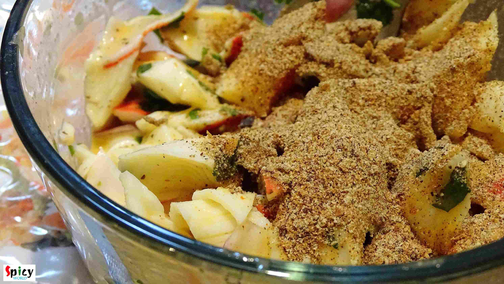
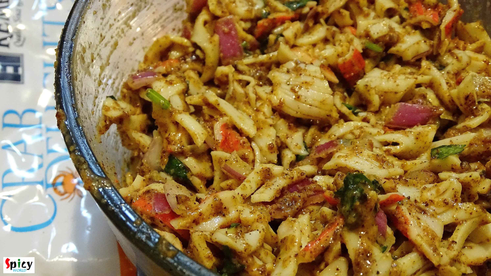
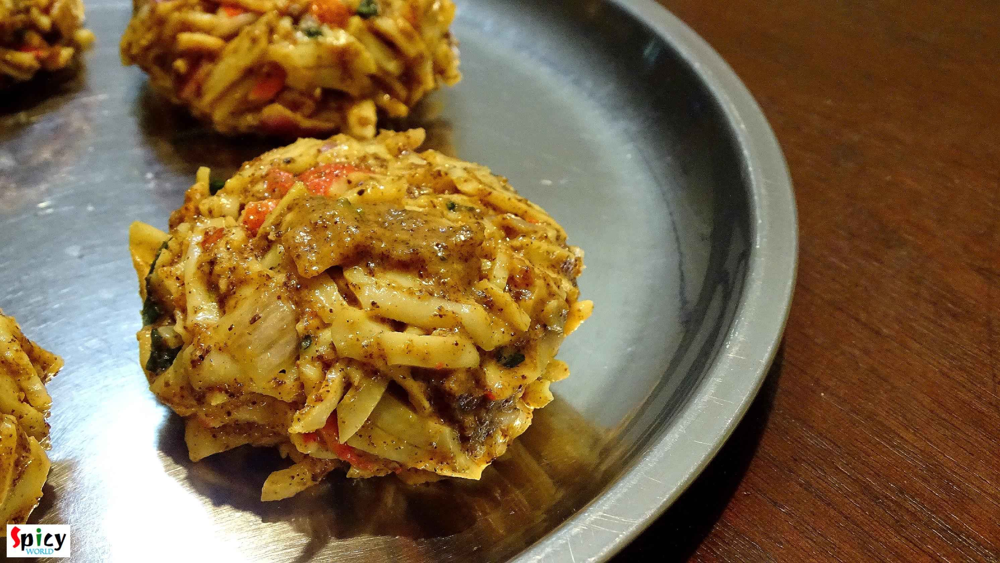
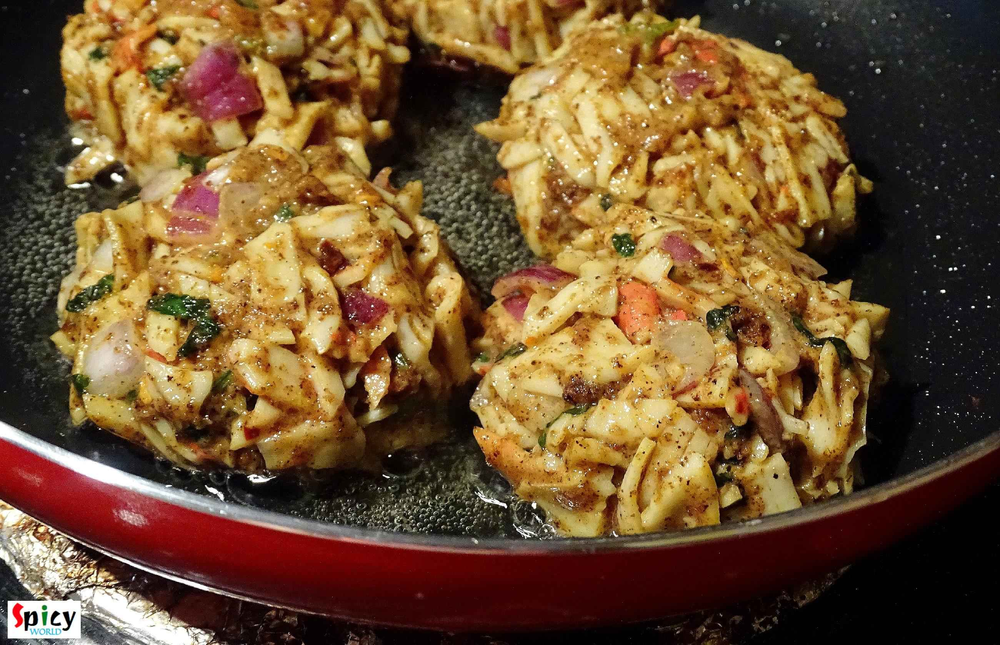
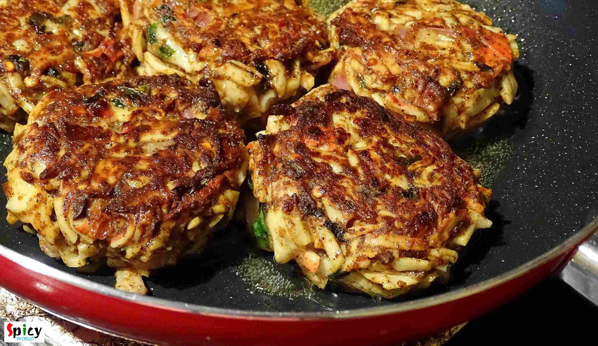
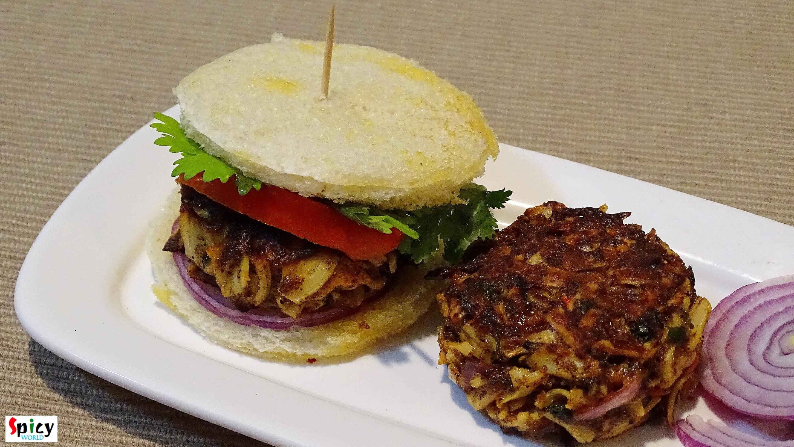

Crab Cakes / Crab Patties
In India I never had crab, because they always scares me. After coming to USA, oneday we went for dinner in a restaurant. 'He' already ordered 'crab cake' as appetizer when I went to restroom. I really got upset after returning because I had no idea that crab cake is made of crab meat only. But when they served two cakes in a plate, the platter really impressed me. The taste was phenomenal and most important they didn't scare me at all. After that dinner I tried it in many other restaurants also and fell in love with crab meat (not whole crab). Last weekend I made these cakes at home and they came out delicious. Try this in your kitchen and let me know how it turns out.

Ingredients
- 2 cups of crab meat (flake style).
- 1 egg.
- 2 Teaspoons of mayonnaise.
- 1 Teaspoon of crushed garlic.
- 3 Teaspoons of lemon juice.
- Little lemon zest.
- 1 Teaspoon of black pepper powder.
- 2 Tablespoons of chilli sauce / sriracha sauce.
- Half cup of chopped onion.
- 2 Teaspoons of chopped coriander leaves.
- 4 - 5 Tablespoons of bread crumbs.
- 1 Teaspoon of flour / maida.
- Little garam masala powder.
- Salt.
- Oil for frying.

Steps










- Enjoy them hot with onion rings and ketchup ...
")